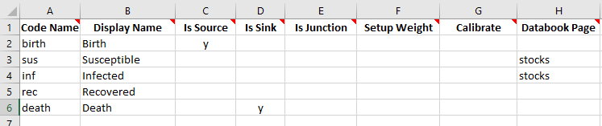
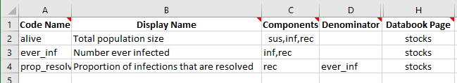
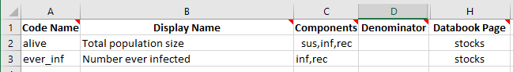
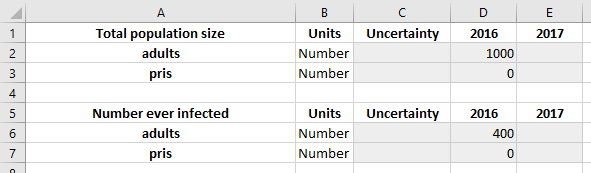
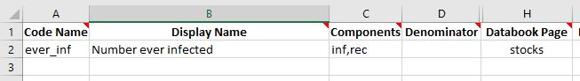
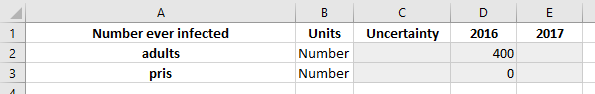
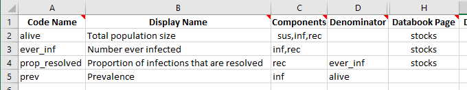
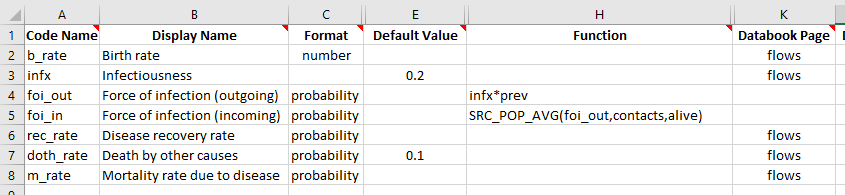

T4 - Characteristics¶
Characteristics can be conceptually difficult to define, but are fairly simple in practice. They are essentially special parameters, that are specific to working with compartments and groups of compartments. We will motivate their design with a worked example that builds on the multi-population framework from T3, and then conclude by discussing other aspects of their design that differ from parameters.
The key functionality provided by characteristics is this - the example in T3 had users initialize the compartment sizes by directly entering values for the number of people in the ‘Susceptible’ and ‘Infected’ compartments, both of which appeared on the ‘Stocks’ sheet in the databook.

However, typically country data does not correspond directly to the compartments in the databook. For example, suppose we know
The total number of people alive
The number of people who have ever been infected
The proportion of infections that have now been resolved
We could use this data to work out what the corresponding compartment sizes should be. For example, if we know that there are 1000 people in total, of whom 400 have ever been infected, and of which 75% of infections have been resolved, then the corresponding initial compartment sizes would be
sus = 600inf = 100rec = 300
which satisfies that sus+inf+rec=1000, and inf+rec=400, and rec/(inf+rec)=300. The motivation for characteristics is that we want the databook to contain data entry for the total number of people, the number ever infected, and the proportion resolved, because those are the values corresponding to the available data. We would like Atomica to work out the corresponding compartment sizes, rather than having to do the calculation manually.
To do this, we need to store the information in the framework that we have quantities
alive = sus+inf+recever_inf = inf+recprop_resolved = rec/ever_inf
and have these quantities appear in the databook instead of the compartments themselves. We could achieve the required data entry using parameters. However, we can’t use the parameters to initialize compartments. This is why there is a separate system, ‘characteristics’, that allows expressions of groups of compartments to be used for initialization.
We can set up the three characteristics defined above in a fairly straightforward way on the ‘Characteristics’ sheet. Rather than writing the formulas above with ‘+’ and ‘/’ operations, we instead provide a comma separated list of compartments (or other characteristics) to sum (in the ‘components’ column) and we provide the denominator separately in the ‘denominator’ column. So the corresponding characteristics sheet is

We will also remove the ‘Databook page’ for the compartments on the the compartments sheet, since we want to initialize the model using characteristics only.
If we create a databook from the framework as usual, we will have updated data entry tables on the ‘Stocks’ sheet. We can then go ahead and fill them out with the initialization described above:

The framework and databook are available in the Atomica repository under atomica/docs/tutorial/assets/t4_framework_1.xlsx and atomica/docs/tutorial/assets/t4_databook_1.xlsx, respectively. We can now load these files in and run a simulation:
[1]:
import atomica as at
P = at.Project(framework='assets/t4_framework_1.xlsx',databook='assets/t4_databook_1.xlsx')
result = P.results[0]
Atomica 1.11.0 (2019-03-07) -- (c) the Atomica development team
2019-08-20 03:23:52.026526
Elapsed time for running "default": 0.0290s
<string>:1: RuntimeWarning: invalid value encountered in double_scalars
<string>:1: RuntimeWarning: invalid value encountered in double_scalars
We now want to check that the initialization has been performed correctly. In the result we can retrieve the variables for the compartment sizes and inspect their values at the first timestep
[2]:
print('sus = %.2f' % (result.get_variable('sus')[0].vals[0]))
print('inf = %.2f' % (result.get_variable('inf')[0].vals[0]))
print('rec = %.2f' % (result.get_variable('rec')[0].vals[0]))
sus = 600.00
inf = 100.00
rec = 300.00
So we have successfully used characteristics to have Atomica automatically convert from the aggregated data values to the underlying compartment values.
Under the hood, we are solving a system of simultaneous equations. What happens if there are more unknowns than there are equations? This corresponds to the system being ‘underdetermined’. An example would be, suppose we know that there are 1000 people in total, of whom 400 have ever been infected, but we don’t know the proportion of people whose infections have been resolved. How do we then decide whether we have 100 infected and 300 recovered, or 300 infected and 100 recovered? Atomica uses the ‘minimum norm’ solution which means that the inputs are distributed equally across groups of compartments that are nonzero, and is zero if no information is available. We will see this with two examples. First, consider the case above where we only know the total population size and number ever infected. This corresponds to the framework and databook containing


The minimum norm solution would see the 400 people uniformly distributed across inf and rec, so there will be 200 people in each compartment. If we run the model with these spreadsheets, we obtain
[3]:
import atomica as at
P = at.Project(framework='assets/t4_framework_2.xlsx',databook='assets/t4_databook_2.xlsx')
result = P.results[0]
print('sus = %.2f' % (result.get_variable('sus')[0].vals[0]))
print('inf = %.2f' % (result.get_variable('inf')[0].vals[0]))
print('rec = %.2f' % (result.get_variable('rec')[0].vals[0]))
Initialization characteristics are underdetermined - this may be intentional, but check the initial compartment sizes carefully
Elapsed time for running "default": 0.0298s
sus = 600.00
inf = 200.00
rec = 200.00
<string>:1: RuntimeWarning: invalid value encountered in double_scalars
<string>:1: RuntimeWarning: invalid value encountered in double_scalars
We also now recieve a warning that ‘Initialization characteristics are underdetermined’ which reflects the fact that we had to rely on the minimum norm solution to infer the value of some of the compartments. For compartments that are missing entirely, we can remove the ‘alive’ characteristic entirely, leaving us with:


Now, we expect that the 400 people will be assigned to inf and rec in equal proportions, but since we have no information at all about sus, it will be initialized with a value of zero:
[4]:
import atomica as at
P = at.Project(framework='assets/t4_framework_3.xlsx',databook='assets/t4_databook_3.xlsx')
result = P.results[0]
print('sus = %.2f' % (result.get_variable('sus')[0].vals[0]))
print('inf = %.2f' % (result.get_variable('inf')[0].vals[0]))
print('rec = %.2f' % (result.get_variable('rec')[0].vals[0]))
Initialization characteristics are underdetermined - this may be intentional, but check the initial compartment sizes carefully
Elapsed time for running "default": 0.0312s
sus = 0.00
inf = 200.00
rec = 200.00
<string>:1: RuntimeWarning: invalid value encountered in double_scalars
<string>:1: RuntimeWarning: invalid value encountered in double_scalars
It’s possible to freely mix compartments and characteristics for initialization. For example, we could set a databook page for ‘susceptible’ on the compartments sheet, and have the databook explicitly contain data entry for the ‘susceptible’ compartment as well as the number ever infected.
What happens if you enter conflicting information? For example, if the number ever infected is greater than the total number of people? In that case, a negative compartment size would occur, resulting in an error. In that case, the simulation cannot be run unless you find and fix the error. Atomica will print out diagnosic output to help identify where the negative compartment size originates from. Unfortunately, it is still challenging and one of the most difficult parts of framework design in Atomica.
Errors relating to negative compartment sizes mean that inconsistent information about the system has been entered
It’s also possible for a system to be overdetermined. For example, if you specify data values for inf, rec, and inf+rec. If you specify inconsistent initial values, then a warning will be displayed and ‘best fit’ values will be used.
Further reading: Compartment initialization is described in more detail in the Atomica code documentation
Characterastic also differ from parameters in that normalized characteristics contain additional logic to deal with the numerator or denominator being zero. Previously we defined foi_out = infx*inf/popsize, but we had a ‘RuntimeWarning’ due to the prisoner population being zero at the first timestep. Instead of defining the population size and prevalence as parameters, we can instead define them as characteristics. We can reuse the alive characteristic, and define an additional
characteristic for prevalence.

Notice that we haven’t provided a databook page for the prev characteristic - this way, it won’t affect the initialization at all. Now we can use alive instead of popsize in the parameter functions, and we can use prev instead of inf/popsize for the prevalance. If the numerator and denominator of a characteristic are both zero, then the characteristic value will also be zero (whereas the parameter would be ‘NaN’). Our parameters sheet now reads:

We can now go ahead and run this framework:
[5]:
import atomica as at
P = at.Project(framework='assets/t4_framework_4.xlsx',databook='assets/t4_databook_1.xlsx')
result = P.results[0]
Elapsed time for running "default": 0.0289s
and we can see now that the ‘RuntimeWarning’ has been resolved.
The final difference between characteristics and parameters is that characteristics take up no storage space, because they get dynamically evaluated in the results. Thus, using characteristics instead of parameters leads to smaller file sizes.